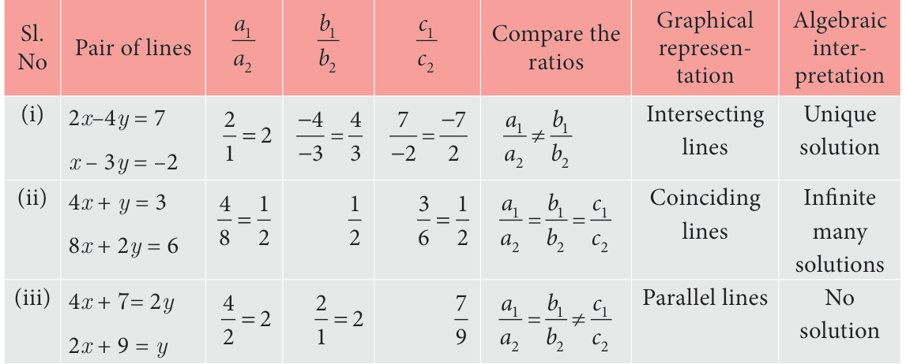
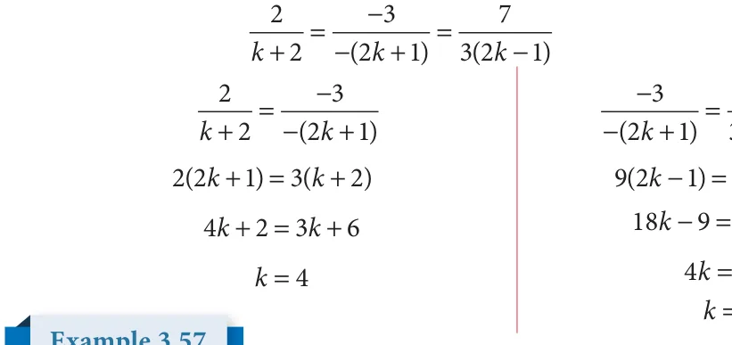
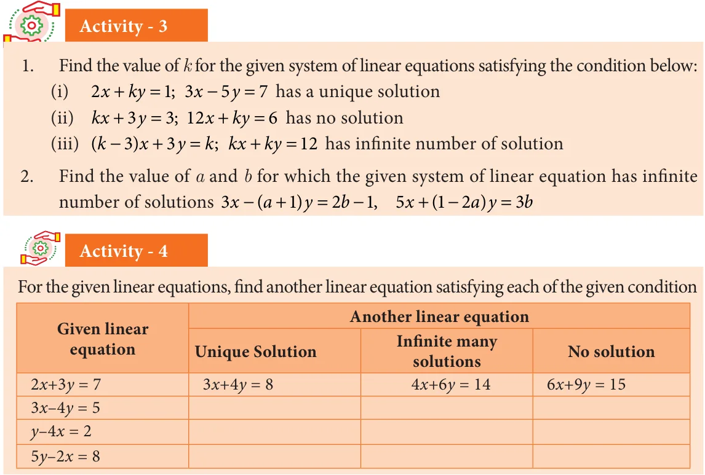

Consider linear equations in two variables say
\(a x+by +c= 0 ...(1)\)
\(a_2x + b_2y + c_2 = 0\) ...(2)
where \(a_1, a_2, b_1, b_2, c_1\) and \(c_2\) are real numbers. Then the system has:
- a unique solution if \(\frac{a_1}{a_2} \ne \frac{b_1}{b_2}\) (Consistent)
- an Infinite number of solutions if \(\frac{a_1}{a_2} = \frac{b_1}{b_2} = \frac{c_1}{c_2}\) (Consistent)
- no solution if \(\frac{a_1}{a_2} = \frac{b_1}{b_2} \ne \frac{c_1}{c_2}\) (Inconsistent)
Example 3.54
Check whether the following system of equation is consistent or inconsistent and say how many solutions we can have if it is consistent.
- (i) \(2x - 4y = 7\); \(x + 2y = -3\) (ii) \(4x + y = 3\); \(8x + 2y = 6\) (iii) \(4x + 7y = 2\); \(12x + 21y = 9\)
Solution

Example 3.55 Check the value of \(k\) for which the given system of equations \(kx + 2y = 3\); \(2x - 3y = 1\) has a unique solution.
Solution
Given linear equations are
kx \(+ = .....(1)\) \(a x + + =\)
\(- =\) .....( ) \(+ + =\) Here = , = , = , \(= -\) ; For unique solution we take \(a \frac{1b1}{b} \ne\) ; therefore \(\frac{k2}{23} \ne -\) ; \(\ne - 3\) , that is \(k \ne - 43\) .

Find the value of k, for the following system of equation has infinitely many solutions. \(- =\) ; ( + ) - ( + ) \(= 3 2( -\) Solution Given two linear equations are \(- =\) a \(x + + =\)

( + ) - ( + ) \(= 3 2( -\) \(+ + =\)
Here = , \(= -\) , = ( + ), \(= -\) ( + ), = , \(= 3 2( -\)
For infinite number of solution we consider \(\frac{a1b1c1}{abc} = = = - =\)

Example 3.57 Find the value of \(k\) for which the system of linear equations \(8x + 5y = 9\); \(kx + 10y = 15\) has no solution.
Solution
Given linear equations are
\(8x + 5y = 9\) \(a x+ by + c=\) 0 kx \(+10y =15\) a2x \(+ b2y + c2 =\) 0 Here \(a= 8\), \(b= 5\), \(c= 9\), \(a= k,b=10,c=15\)
For no solution, we know that \(\frac{a_1}{a_2} = \frac{b_1}{b_2} \ne \frac{c_1}{c_2}\) and so, \(\frac{8}{k} = \frac{5}{10} \ne \frac{9}{15}\)
\(80 = 5k k =16\)


Solve by any one of the methods
- The sum of a two digit number and the number formed by interchanging the digits is 110. If 10 is subtracted from the first number, the new number is 4 more than 5 times the sums of the digits of the first number. Find the first number.
- The sum of the numerator and denominator of a fraction is 12. If the denominator is increased by 3, the fraction becomes \(\frac{1}{2}\) . Find the fraction.
- ABCD is a cyclic quadrilateral such that \(\angle A = (4y + 20) ^{\circ}\) , \(\angle B = (3y - 5) ^{\circ}\) , \(\angle C =(4x) ^{\circ}\) and \(\angle D = (7x + 5) ^{\circ}\) . Find the four angles.
- On selling a T.V. at 5% gain and a fridge at 10% gain, a shopkeeper gains ₹2000. But if he sells the T.V. at 10% gain and the fridge at 5% loss, he gains Rs.1500 on the transaction. Find the actual price of the T.V. and the fridge.
- Two numbers are in the ratio 5 : 6. If 8 is subtracted from each of the numbers, the ratio becomes 4 : 5. Find the numbers.
- 4 Indians and 4 Chinese can do a piece of work in 3 days. While 2 Indians and 5
Chinese can finish it in 4 days. How long would it take for 1 Indian to do it? How long would it take for 1 Chinese to do it?